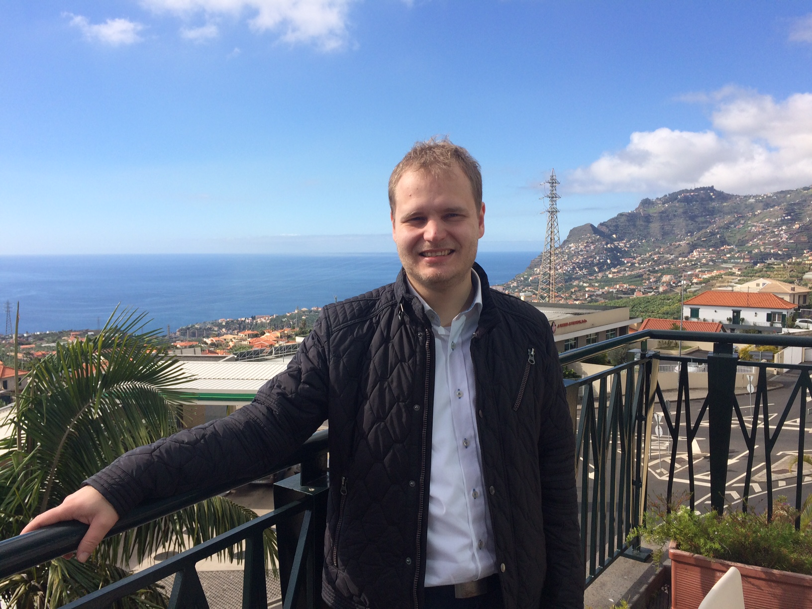

Dr. rer.-nat. Dipl.-Math. Michael von Wenckstern
Project Leader EmbeddedMontiArc

Software Engineering
Department of Computer Science 3
RWTH Aachen University
Ahornstraße 55
D-52074 Aachen
+49 (241) 80-21319
vonwenckstern@se-rwth.de
Room 4314
Department of Computer Science 3
RWTH Aachen University
Ahornstraße 55
D-52074 Aachen
+49 (241) 80-21319
vonwenckstern@se-rwth.de
Room 4314
Research Prototype:
Research Interests:
- Model-Driven Engineering
- Software Architecture Modeling
- Component and Connector Models (C&C Models)
- Verification of Software Architectures
Publications:
-
[Wen20]Aachener Informatik-Berichte, Software Engineering, Band 44, ISBN 978-3-8440-7239-6, Shaker Verlag, Mar. 2020.
-
[DGH+19]In: Journal on Software: Practice and Experience, R. Buyya, J. Bishop, K. Cooper, R. Jonas, A. Poggi, S. Srirama (Eds.), Volume 49(2), pp. 301-328, Wiley Online Library, Feb. 2019.
-
[KRS+18a]In: Conference on Model Driven Engineering Languages and Systems (MODELS’18), pp. 447 - 457, ACM, Oct. 2018.
-
[KRR+18]In: Proceedings of MODELS 2018. Workshop EXE, Oct. 2018.
-
[KRS+18b]In: Proceedings of MODELS 2018. Workshop ModComp, Oct. 2018.
-
[BKL+18]In: Proceedings of the 2nd International Symposium on Computer Science and Intelligent Control (ISCSIC’18), ACM, Sep. 2018.
-
[KKR+18]In: Tagungsband des Dagstuhl-Workshop MBEES: Modellbasierte Entwicklung eingebetteter Systeme XIV (MBEES’18), Univ. Hamburg, Apr. 2018.
-
[BMR+18]In: Software Engineering und Software Management 2018 (SE’18), Volume P-279, pp. 97-99, GI-Edition-Lecture Notes in Informatics (LNI), Bonner Köllen Verlag, Mar. 2018.
-
[KSRW18]In: Proceedings of the 6th International Conference on Model-Driven Engineering and Software Development (MODELSWARD’18), pp. 256 - 267, SciTePress, Jan. 2018.
-
[HKK+18]In: Proceedings of the 6th International Conference on Model-Driven Engineering and Software Development (MODELSWARD’18), pp. 163 - 178, SciTePress, Jan. 2018.
-
[MMR+17b]In: Proceedings of MODELS 2017. Workshop ModComp, CEUR 2019, Sep. 2017.
-
[GKR+17]In: Proceedings of MODELS 2017. Workshop EXE, CEUR 2019, Sep. 2017.
-
[BMR+17]In: Conference on Model Driven Engineering Languages and Systems (MODELS’17), pp. 167-177, IEEE, Sep. 2017.
-
[KRRW17]In: European Conference on Modelling Foundations and Applications (ECMFA’17), pp. 34-50, LNCS 10376, Springer, Jul. 2017.
-
[HRW17]In: GI Softwaretechnik-Trends, Volume 37(2), May 2017.
-
[MRRW16]In: Workshop on Model-Driven Engineering for Component-Based Software Systems (ModComp’16), Volume 1723, pp. 19-24, CEUR Workshop Proceedings, Oct. 2016.
-
[BRRW16]In: International Workshop in OCL and Textual Modeling (OCL’16), pp. 49-56, ACM/IEEE, Oct. 2016.
-
[RRS+16]In: International Systems and Software Product Line Conference (SPLC ’16), pp. 174-183, ACM, Sep. 2016.
-
[RSW16]In: GI Softwaretechnik-Trends, Volume 36(2), May 2016.
-
[BMP+16]In: Modellierung 2016 Conference, Volume 254, pp. 109-116, LNI, Bonner Köllen Verlag, Mar. 2016.
-
[CNR+16]In: Fail Safety in Medical Cyber-Physical Systems Workshop (FS-MCPS’16), Volume 1559, pp. 195-200, CEUR Workshop Proceedings, Feb. 2016.
-
[BRW16]In: International Workshop in OCL and Textual Modeling (OCL’16), pp. 17-32, ACM/IEEE, 2016.
-
[RSW+15]In: Software Product Line Conference (SPLC’15), pp. 141-150, ACM, 2015.
Certificates:
Supervised Bachelor/Master Thesis:
- Özen, Ahmet Tayfun: Evaluierung von Komponenten- und Konnektoren-Views, 2018
- Strepkov, Ievgen: Development of Web Playground for Component and Connector Models, 2018
- Schrick, Manuel: Visualisation of Textual Component and Connector Models, 2018
- Schneiders, Saschsa: Development of a C++ Generator for Embedded Modeling Languages, 2017
- Kahlert, Fabian: Extension of the C&C View Language and its Verification for Embedded Systems, 2017
- Mehlan, Ferdinand: Verification of Non-Functional Properties on Component and Connector Models, 2017
- Ho, Dinh-An: 3D Visualiszation API for Self-Driving Cars, 2017
- Heithoff, Malte: Model Checking of Self-Driving Cars Requirements against its Implementation, 2017
- Ronck, Jean-Marc: Creation of a Multi-User Online IDE for Domain-Specific Languages, 2017
- Shumeiko, Igor: Strategies to Reduce Variable Unfoldings in I/O-EFA Simulation Preorder Algorithm, 2017
- Bajana, Christian: Transformation von Simulink Stateflow Charts zu erweiterten endlichen Eingabe-/Ausgabeautomaten, 2016
- Ernst, David: Transformation von MontiArc-Modellen zu Kontrollflussgraphen, 2016
- Parashin, Vladimir: Fast Simulation Preorder Algorithm for Input/Output Extended Finite Automata, 2016
- Tolksdorf, Severin: Kontrollflussgraphenanalyse für das Verifikationstool, 2016
- Strodthoff, Nicolai: Strukturelle Analysen von MontiArc-Modellen mittels Z3-Solver, 2016
- Kogaj, Alexander: Formalisierung von Anforderungen zur Verhaltenskompatibilitätsprüfung, 2016
- Brunecker, Stefan: Transforming Simulink Models to MontiArc Models, 2016
- Tabone, Luca: Auflösen syntaktischer Konflikte während der Delta-Modellierung auf Basis der Semantik von FeatureDiagramm- und Delta-Sprachen, 2015
Supervised Seminar Topics:
- Tabone, Luca: Feature Diagrams: A Survey and a Formal Semantics, 2015
- Deuster, Yannick: Comparing Different Algorithms Computing Maximal (Strong) Bisimulation, 2015
- Basavarajappa, Namitha Raj: Metrics for Non-Functional Requirements, 2015
- Kesmez, Deniz: Arduino Simulatoren, 2016
- Kulikov, Ilya: Different tracking methods for model cars in scale 1:58, 2016
- Kasyanov, Anton: Usage of Fast R-CNN for Model Cars in Scale 1:58, 2016
- Mokhtarian, Armin: OpenSimulator – A tool to create your own city, street and car, 2016
- Müller, Jonathan: Generative Softwareentwicklung mit MontiCore – Entwicklung einer einfachen domänenspezifischen Sprache zur Formalisierung von Erfüllbarkeitsproblemen, 2016
- Harisha, Pooja: MontiArc – A modelling language for C&C models, 2016
- Hellwig, Alexander: Intelligent Autocompletion of MontiArc Models in Cloud9-IDE, 2016
- Huppertz, Martin: SymbolTable Concepts for MontiArc, 2016
- Mohanty, Punit: Parser Error Recovery Techniques in ANTLR, 2016
- Mades, Mirko: Syntax Highlighting for MontiArc in Cloud9-IDE, 2016
- Lüger, Markus: How to Visitor Patterns to automatically generate Outline for MontiArc models, 2016
- Netz, Lukas: Generating SVG Output files using Freemarker Engine, 2016
- Conraths, Thomas: Comparing different Layout Algorithms for C&C models, 2016
- Kehrbusch, Philipp: What is concrete and abstract syntax?, 2016
- Rahman, Khan Hafizur: Architecture Analysis & Design Language (AADL), 2017
- Hayat, Umair Abbas: Modelica, 2017
- Hellwig, Alexander: SysML, 2017
- Dalgic, Baran: Simulink, 2017
- Eeckels, Gregor: extensible Architecture Description Language for Software and Systems (xADL), 2017
- Ilov, Petro: Clone Detection, 2018
- Mokhtarian, Armin: 3D Modeling Using EmbeddedMontiArcMath, 2018
- Schneiders, Sascha: Modular and Optimized C++ Code-Generator for the Component and Connector Modeling Language MontiCAR, 2018
- Mehlan, Ferdinand: Improvements to OCL Implementation within the Monti-Core workbench, 2018
- Ronck, Jean-Marc: Creating a Multi-User Online-IDE without any server backend, 2018
- Kahlert, Fabian: Concepts to Extend the EmbeddedMontiArc Language Family with EmbeddedMontiArcApplication, 2018
- Schneiders, Sascha: Generator Composition Concepts for Extending the EmbeddedMontiArc Language Family with EmbeddedMontiArcApplication, 2018
- Heithoff, Malte: Case Study on EmbeddedMontiArc Language for PacMan, 2018
- Haller, Philipp: Case Study on EmbeddedMontiArc Language for SuperMario, 2018
- Mehlan, Ferdinand: Modellierung eines Wetterballons, 2018
Tools/Videos:
- Overview Video of EmbeddedMontiArcStudio
- Component and Connectors Views: Definition, Verification, Witnesses
- Defining Semantics of Extra-Functional-Properties in Component and Connector Models with OCL
- Short introduction for EmbeddedMontiMath and how to generate C++ code
- HaxPro: High Altitude eXploration Probe (“Hot Air Balloon measuring Weather Data”: Chip Desgin, Frequency Testing, Test Flight)
- Controlling a Self-Driving Car with MontiArc
- Bounded Model Checking of Self-Driving Cars Requirements against its Implementation
- Multi User Online IDE for DSLs on the example language MontiArc
- Simulating Platoon with 10 Cars
- 3D-Simulation of Autonomous Driving Vehicles – Technology Overview
- 3D-Simulation of Autonomous Driving Vehicles – Driving at Sun and Daytime
- 3D-Simulation of Autonomous Driving Vehicles – Driving at Rain and at Night
- Transformation Tool for Simulink Models to MontiArc Models